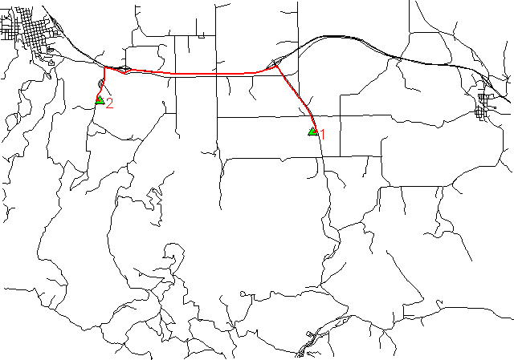

Costs may be either line lengths, or attributes saved in a database table. These attribute values are taken as costs of whole segments, not as costs to traverse a length unit (e.g. meter) of the segment. For example, if the speed limit is 100 km / h, the cost to traverse a 10 km long road segment must be calculated as length / speed = 10 km / (100 km/h) = 0.1 h. Supported are cost assignments for both arcs and nodes, and also different costs for both directions of a vector line. For areas, costs will be calculated along boundary lines.
The input vector needs to be prepared with v.net operation=connect in order to connect points representing center nodes to the network.
Nodes and arcs can be closed using cost = -1.
Least cost paths are written to the output vector map with an attached attribute table.
Nodes can be
id start_point_category end_point_category
or
id start_point_x start_point_y end_point_x end_point_y
Points specified by category must be exactly on network nodes, and the input vector map needs to be prepared with v.net operation=connect.
When specifying coordinates, the next network node to a given coordinate pair is used.
The attribute table will contain the following attributes:
If the cost columns 'afcol', 'abcol' and 'ncol' are not specified, the length of network segments is measured and zero costs are assumed for nodes.
When using attributes, the length of segments is not used. To get accurate results, the line length must be taken into account when assigning costs as attributes. For example, to get the fastest path, the columns 'max_speed' and 'length' are required. The correct fastest path can then be found by specifying afcol=length/max_speed. If not yet existing, the column containing the line length ("length") has to added to the attributes table using v.to.db.

# Spearfish
echo "1|601955.1|4916944.9|start
2|594385.6|4921565.2|end" | v.in.ascii in=- cat=1 x=2 y=3 out=startend col="cat integer, \
east double precision, north double precision, label varchar(6)"
v.db.select startend
g.copy vect=roads,myroads
# create lines map connecting points to network
v.net myroads points=startend out=myroads_net op=connect thresh=500 alayer=1 nlayer=2
# set up costs
# create unique categories for each road in layer 3
v.category in=myroads_net out=myroads_net_time opt=add cat=1 layer=3 type=line
# add new table for layer 3
v.db.addtable myroads_net_time layer=3 col="cat integer,label varchar(43),length double precision,speed double precision,cost double precision,bcost double precision"
# copy road type to layer 3
v.to.db myroads_net_time layer=3 qlayer=1 opt=query qcolumn=label columns=label
# upload road length in miles
v.to.db myroads_net_time layer=3 type=line option=length col=length unit=miles
# set speed limits in miles / hour
v.db.update myroads_net_time layer=3 col=speed val="5.0"
v.db.update myroads_net_time layer=3 col=speed val="75.0" where="label='interstate'"
v.db.update myroads_net_time layer=3 col=speed val="75.0" where="label='primary highway, hard surface'"
v.db.update myroads_net_time layer=3 col=speed val="50.0" where="label='secondary highway, hard surface'"
v.db.update myroads_net_time layer=3 col=speed val="25.0" where="label='light-duty road, improved surface'"
v.db.update myroads_net_time layer=3 col=speed val="5.0" where="label='unimproved road'"
# define traveling costs as traveling time in minutes:
# set forward costs
v.db.update myroads_net_time layer=3 col=cost val="length / speed * 60"
# set backward costs
v.db.update myroads_net_time layer=3 col=bcost val="length / speed * 60"
# ... the 'start' and 'end' nodes have category number 1 and 2
# Shortest path: ID as first number, then cat1 and cat2
echo "1 1 2" | v.net.path myroads_net_time alayer=3 nlayer=2 out=mypath
# Fastest path: ID as first number, then cat1 and cat2
echo "1 1 2" | v.net.path myroads_net_time alayer=3 nlayer=2 afcol=cost abcol=bcost out=mypath_time
g.region vect=myroads_net d.mon x0 d.vect myroads_net # show shortest path d.vect mypath col=red width=2 # show fastest path d.vect mypath_time col=blue width=2 # start and end point d.vect myroads_net icon=basic/triangle fcol=green size=12 layer=2 d.font font=Vera d.vect startend disp=cat type=point lsize=14 layer=2
Last changed: $Date$